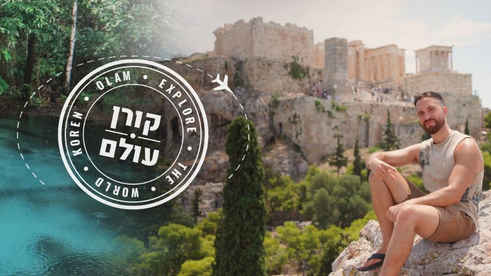

טיולים, תרבויות ואתגרים מסביב לעולם 🌍
פרק חדש ביוטיוב כל חמישי ב-
18:00
חדש
הפרק האחרון ביוטיוב
24 שעות: זרים מחליטים עליי הכל בתאילנד 🇹🇭
הירשמו לערוץ ביוטיוב
כל הפרקים המלאים
‹
Instagram
רגעים מהדרך
‹
TikTok
סרטונים קצרים
‹
Facebook
‹